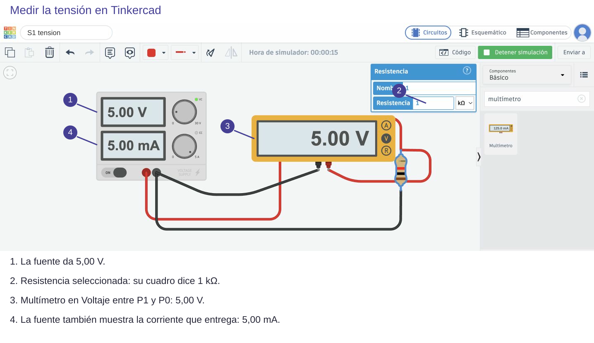

Contenido
1. El reto
Monta en Tinkercad un divisor con una fuente de 5 V, R₁ = 1 kΩ arriba y R₂ = 2,2 kΩ abajo. Llama al diseño S5 divisor.
- Predice en tu informe la tensión de salida (ya la calculaste en la clase anterior).
- Piensa en tres nodos: el +, la salida S y el 0 V. Cada resistencia va entre dos de ellos.
- Decide tú dónde van las puntas del multímetro para medir la salida.
- Mide y compara con tu predicción.
- Detén, intercambia R₁ y R₂ y vuelve a medir. ¿Tienes que mover las puntas?
Ver la solución
Roja en S y negra en 0 V, en modo Voltaje. Salida: 3,44 V. Al intercambiar no mueves las puntas: la salida pasa a 1,56 V, porque ahora la resistencia de abajo es la pequeña.
2. Una captura que demuestra algo
Una captura es una prueba: alguien que la mire tiene que poder saber qué circuito es y qué has medido. Fíjate en esta, de la primera clase:

- Que se vea todo el circuito, también el cable de vuelta al −.
- Que se lean los valores de la fuente y de las resistencias (haz clic en una para que se vea su cuadro).
- Que se vean el modo del multímetro y la lectura con su unidad.
- Un recorte que solo enseña el número no sirve: no se sabe dónde se ha medido.
Para hacer la captura en un ordenador del aula usa la herramienta Recortes (o la tecla Impr Pant) y pégala en tu informe.
3. Escribe un pie
Debajo de cada captura escribe una frase que diga qué muestra. Ejemplo:
«Divisor con 5 V, R₁ = 1 kΩ y R₂ = 2,2 kΩ. El multímetro, entre S y 0 V, marca 3,44 V, igual que el cálculo. Es una medida simulada.»
Ahora tú. Pega en el apartado 1 de tu informe las dos capturas (antes y después de intercambiar) con su pie, y explica en una frase por qué cambia la salida.
Ver solución
Por ejemplo: «Al intercambiarlas, la resistencia de abajo pasa de 2,2 kΩ a 1 kΩ. Como la salida es la tensión de la resistencia de abajo y ahora es la pequeña, la salida baja de 3,44 V a 1,56 V».
Compruébalo
¿Sirve esta captura como prueba? Decide si cada frase es verdadera o falsa.
00:00: